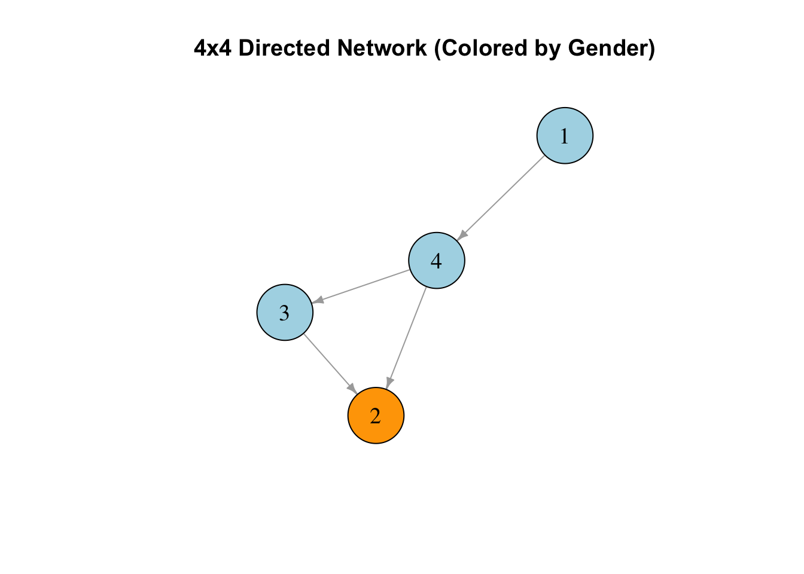

library(knitr)
library(tidyverse)
library(scholar)
library(openalexR)
library(rvest)
library(jsonlite)
library(httr)
library(rvest)
library(reshape2)
library(xml2)
library(openxlsx)
library(polite)
library(igraph)
library(sna)
library(genderizeR)
library(RSelenium)
library(netstat)
library(pingr)
library(RSiena)
library(devtools)
library(RsienaTwoStep)
# load the functions you need from the packages
fpackage.check <- function(packages) {
lapply(packages, FUN = function(x) {
if (!require(x, character.only = TRUE)) {
install.packages(x, dependencies = TRUE)
library(x, character.only = TRUE)
}
})
}
fsave <- function(x, file = NULL, location = "./data/processed/") {
ifelse(!dir.exists("data"), dir.create("data"), FALSE)
ifelse(!dir.exists("data/processed"), dir.create("data/processed"), FALSE)
if (is.null(file)) {
file <- deparse(substitute(x))
}
datename <- substr(gsub("[:-]", "", Sys.time()), 1, 8)
totalname <- paste(location, datename, file, ".rda", sep = "")
save(x, file = totalname) # need to fix if file is reloaded as input name, not as x.
}
fload <- function(filename) {
load(filename)
get(ls()[ls() != "filename"])
}
fshowdf <- function(x, ...) {
knitr::kable(x, digits = 2, "html", ...) %>%
kableExtra::kable_styling(bootstrap_options = c("striped", "hover")) %>%
kableExtra::scroll_box(width = "100%", height = "300px")
}Last compiled on October, 2025
Jochem does not expect a large introduction or a huge theory sections. So you do need to do a literature review but not a large one.
As for the weights: what he is looking for is whether we are able to apply a social network perspective. Thus, for the societal relevance: he wants us to apply a social network perspective how macro things can stem from micro relations.
For scientific relevance: just add a new aspect of a social network perspective (like looking at triads instead of dyads)
appropriateness of literature review: he wants to see papers that demonstrate that a lack of a social network perspective is rise to improvement, or to show an author doing a social network perspective and I am building on that.
Not large pieces of text, but he wants to see the social network perspective.
Clear explanation is still quite difficult for us still: macro level, but you are analyzing micro perspectives. But mention groups, mention interdependencies.
Adequacy of research design: difficult because you have to apply a specific research design.
He wants to read something about ties: undirected, directed, what decisions did you make.
| ## Presenting my project |
|---|
| ## GOF |
| ### Theory |
| Chapter 7.15 in SNASS |
| In regression you determine the Goodness of Fit with Rsquare. There is no cut off point |
| Goodness of Fit is nice to determine whether the addition of varibales is good. To see whether the variance in the dependent variable is actually explained by the variables. |
| What we want is to be sure that when we interpret the estimates in our regression model, it says something about our hypothesis. When do we say it’s reliable? |
| There is a difference between predicting human behaviour instead of explaining it. Predict - Actual outcome 1 - 1 true positive 1 - 0 false positive 0 - 0 true negative 0 - 1 false negative Out of sample prediction: they build a model on a test dataset and if it is reliable it should also be able to predict it in another dataset. |
| In social sciences we have focused on explaining: testing hypothesis. But you can also predict |
| In social networks: We already know that the model we end up with are actually the best models |
| Given we think these statistics are important, the results will lead to models in which the difference to reality and this one is smaller (that’s how the model is working) |
| The value of your statistic will depend on your T1. So it’s not the input they are changing but they are changing the output. |
| They test if your included statistics are able to predict statistics in your observed network which you did not include in your model. |
| If you only include reciprocity and you see that given my estimates, would this also lead to a network where the in-degree statistic is replicated. So you simulate networks based on our statistics, and then run an indegree distribution and see if the indegree distribution gets close to what we observe in reality. |
| ### Model |
r load("./data/processed/result_gender2.rda") |
| ``` r wave1 <- result_gender2\(nets[1,,] wave2 <- result_gender2\)nets[2,,] |
| # filter out the waves of the object: we need to check our input dim(wave1) ``` |
## [1] 674 674 |
r dim(wave2) |
## [1] 674 674 |
r # you need to have 0 missing values: sum(is.na(wave1)) |
## [1] 0 |
r sum(is.na(wave2)) |
## [1] 0 |
r #check the diagonal: all places should be 0 sum(diag(wave1)==0) |
## [1] 670 |
r sum(diag(wave2)==0) |
## [1] 671 |
| ``` r # a few people did work with themselves: diag(wave1) <- 0 diag(wave2) <- 0 |
| # everything should be 1 or 0: sum(wave1>1) ``` |
## [1] 0 |
r sum(wave2>1) |
## [1] 0 |
r # check if it's not empty: there are people with 1's sum(wave1>0) |
## [1] 335 |
r sum(wave2>0) |
## [1] 572 |
| ``` r net_gender <- array(data = c(wave1, wave2), dim = c(dim(wave1), 2)) # net_gender |
| # dependent net2 <- sienaDependent(net_gender) |
| # independent variables gender <- result_gender2\(demographics\)gender |
| gender <- ifelse(gender==“female”,1,0) gender <- coCovar(gender) |
| #gender |
| # Create siena data object mydata3 <- sienaDataCreate(net2, gender) mydata3 ``` |
## Dependent variables: net2 ## Number of observations: 2 ## ## Nodeset Actors ## Number of nodes 674 ## ## Dependent variable net2 ## Type oneMode ## Observations 2 ## Nodeset Actors ## Densities 0.00074 0.0013 ## ## Constant covariates: gender |
| ``` r myeff <-getEffects(mydata3) |
| ifelse(!dir.exists(“results”), dir.create(“results”), FALSE) ``` |
## [1] FALSE |
r print01Report(mydata3, modelname = "./results/soc_init2") |
| Include effects |
r myeff <- setEffect(myeff, jumpXTransTrip, interaction1 = "gender", include = T) |
## effectNumber effectName shortName include fix test initialValue ## 1 370 transitive triplets jumping gender jumpXTransTrip TRUE FALSE FALSE 0 ## parm ## 1 0 |
| Run model |
| ``` r myAlgorithm <- sienaAlgorithmCreate(projname = “soc_init2”) ansM1 <- siena07(myAlgorithm, data = mydata3, effects = myeff, returnDeps = TRUE) |
| ansM1 ``` |
| ### GOF Macro level |
| ``` r #gofi0 <- sienaGOF(ansM1, IndegreeDistribution, verbose = FALSE, join = TRUE, varName = “net2”, cumulative = F) #plot(gofi0, violin = F) |
| #gofi1 <- sienaGOF(ansM1, OutdegreeDistribution,
verbose = FALSE, join = TRUE, varName = “net2”, cumulative = F)
#plot(gofi1, violin = F) ``` |
| On the X axis we see the number of indegrees and on the Y axis you see the statistic output (how often it occurs) The boxplots indicate: if you simulate the network many times, sometimes people with 1 indegrees occur more than other times. (unit of analysis is the simulated network). The dot is the median value. The violin plot shows the normal distribution of the simulated networks (a bit an overkill as we also had a boxplot, you can use one of the two) > so I switched it off |
| The p value: we test a set of random variable to a set of fixed values and we combine that in one test where we take into account that there is covariance between all that stuff. We test a covariance matrix against a fixed set of variables in our network. The test has a function name. |
| The red dots are the observed network The simulated should match the observed ones: is if the red ones are within the violet plot/close to the median value of the simulated network. |
| It’s cummulative. |
| We underestimate isolates, and we overestimate the higher number of indegrees. |
| These figures can indicate what is missing, what you should include. |
| Jochem personally performs goodness of fit measures on the dyad census and the triad census. If I theorise about specific triad configurations, you need to check for others aswell. - Do you want to include it because otherwise your network doesn’t make sense - Or because it makes theoretical sense to control for it. So first check and GOF statistics because then you know if both are applicable. |
### Relative influence |
| My network is too large so it does not work, so we have to create a smaller network. For every actor you get an influence plot and this is average for each actor in a wave, so if you have two waves you get two plots. |
| You can see which statistic has the most effect. The more effects you include, the larger the list. |
| Suppose Jochem is an isolate, then the reciprocity parameter is not relevant for Jochem whatsoever. SO it depends on the relations you have, whether the statistics are important. But that does not mean these effects are not actually taking place in real life. This DOES NOT reflect you parameter estimates. The significance means IF the statistic is at play for you, you will definitely make your decision on reciprocity. But if you can’t evaluate reciprocity because you don’t have any ties. |
| WHEN it is relevant it may have a large effect, but this test shows whether that effect is relevant on the macro level. |
r #RI <- RSiena:::sienaRI(data = mydata3, ansM1) #class(RI) #sienaRI #RSiena:::plot.sienaRI(RI, addPieChart = T, legendColumns = 3)
|
| ### Tweek estimates |
| Simulate based on tweeked estimates (he is not going to discus the code, only the logic) |
| We can plug in our own values of the statistics: say this effect is this important. Saying in your effects object: fixed effect of specific value? |
| If you exclude a specific effect, but have the other values remain the same, you can see how important it is. You can also see that if you increase the effect of inpop, whether that influences your outcome. So if inpop would be more important, then inequality would be greater. |
In you final report you have to include one of the GOF measures And a plot
Struture is quite similar. You can now analyse three waves instead of two.
scholars2025 <- fload("./data/processed/20251016scholars.rda")Descriptive statistics: transtive triads gender
# Create a 4x4 directed network adjacency matrix
set.seed(123)
net1 <- matrix(sample(0:1, 16, replace = TRUE), nrow = 4, ncol = 4)
# Optionally, remove self-loops (no one connects to themselves)
diag(net1) <- 0
net1[2, 4] <- 0
net1[4, 1] <- 0
net1[1, 4] <- 1
net1[1, 3] <- 0
net1[3, 4] <- 0
# Create a list (or vector) with their genders
gender <- c("Male", "Female", "Male", "Male")
# Print the results
print(net1)## [,1] [,2] [,3] [,4]
## [1,] 0 0 0 1
## [2,] 0 0 0 0
## [3,] 0 1 0 0
## [4,] 0 1 1 0print(gender)## [1] "Male" "Female" "Male" "Male"# Create a directed graph from the matrix
g <- graph_from_adjacency_matrix(net1, mode = "directed")
# Assign gender as a vertex attribute
V(g)$gender <- gender
# Set colors for genders
V(g)$color <- ifelse(V(g)$gender == "Male", "lightblue", "orange")
# Plot the network
plot(g,
vertex.size = 40,
vertex.label.cex = 1.2,
vertex.label.color = "black",
edge.arrow.size = 0.5,
main = "4x4 Directed Network (Colored by Gender)"
) Okay now create dataframe
triads <- c("003", "012", "102", "021D", "021U", "021C", "111D", "111U", "030T", "030C", "201", "120D", "120U", "120C", "210", "300")
df <- foreach(a1 = 1:nrow(net1), i = iterators::icount(), .combine = "rbind") %:%
foreach(a2 = 1:nrow(net1), j = iterators::icount(), .combine = "rbind") %:%
foreach(a3 = 1:nrow(net1), k = iterators::icount(), .combine = "rbind") %do% {
if (i > j & j > k) {
data.frame(
i = i, j = j, k = k,
gender_i = gender[a1], # gender of node i
gender_j = gender[a2], # gender of node j
gender_k = gender[a3], # gender of node k
t1_ij = as.character(net1[a1, a2]),
t1_ji = as.character(net1[a2, a1]),
t1_ik = as.character(net1[a1, a3]),
t1_ki = as.character(net1[a3, a1]),
t1_jk = as.character(net1[a2, a3]),
t1_kj = as.character(net1[a3, a2]),
type = triads[which(sna::triad.census(net1[c(a1, a2, a3), c(a1, a2, a3)]) == 1)]
)
}
}
# Optional: create triad name
df$name <- paste0(df$i, ".", df$j, ".", df$k)
print(df)## i j k gender_i gender_j gender_k t1_ij t1_ji t1_ik t1_ki t1_jk t1_kj type name
## 1 3 2 1 Male Female Male 1 0 0 0 0 0 012 3.2.1
## 2 4 2 1 Male Female Male 1 0 0 1 0 0 021C 4.2.1
## 3 4 3 1 Male Male Male 1 0 0 1 0 0 021C 4.3.1
## 4 4 3 2 Male Male Female 1 0 1 0 1 0 030T 4.3.2Now filter the things you need:
021C en 030T
# only keep the triangles we are interested in
df_filtered <- subset(df, type %in% c("021C", "030T"))
# Initialize counters
ffm <- 0
mmf <- 0
mmm <- 0
fff <- 0
# i am so soryr for this for loop :) I know it is horrible to look at but it works and I understand it
for (idx in 1:nrow(df_filtered)) {
# Tie variables
t_ij <- df_filtered$t1_ij[idx]
t_ji <- df_filtered$t1_ji[idx]
t_ik <- df_filtered$t1_ik[idx]
t_ki <- df_filtered$t1_ki[idx]
t_jk <- df_filtered$t1_jk[idx]
t_kj <- df_filtered$t1_kj[idx]
# Gender variables
g_i <- df_filtered$gender_i[idx]
g_j <- df_filtered$gender_j[idx]
g_k <- df_filtered$gender_k[idx]
# 1) i -> j -> k, open: i -> k must be 0 or NA
if (t_ij == 1 & t_jk == 1 & !(t_ik == 1)) {
if (g_i == "Female" & g_j == "Female" & g_k == "Male") ffm <- ffm + 1
if (g_i == "Male" & g_j == "Male" & g_k == "Female") mmf <- mmf + 1
if (g_i == "Male" & g_j == "Male" & g_k == "Male") mmm <- mmm + 1
if (g_i == "Female" & g_j == "Female" & g_k == "Female") fff <- fff + 1
}
# 2) i -> k -> j, open: i -> j must be 0 or NA
if (t_ik == 1 & t_kj == 1 & !(t_ij == 1)) {
if (g_i == "Female" & g_k == "Female" & g_j == "Male") ffm <- ffm + 1
if (g_i == "Male" & g_k == "Male" & g_j == "Female") mmf <- mmf + 1
if (g_i == "Male" & g_k == "Male" & g_j == "Male") mmm <- mmm + 1
if (g_i == "Female" & g_k == "Female" & g_j == "Female") fff <- fff + 1
}
# 3) j -> i -> k, open: j -> k must be 0 or NA
if (t_ji == 1 & t_ik == 1 & !(t_jk == 1)) {
if (g_j == "Female" & g_i == "Female" & g_k == "Male") ffm <- ffm + 1
if (g_j == "Male" & g_i == "Male" & g_k == "Female") mmf <- mmf + 1
if (g_j == "Male" & g_i == "Male" & g_k == "Male") mmm <- mmm + 1
if (g_j == "Female" & g_i == "Female" & g_k == "Female") fff <- fff + 1
}
# 4) j -> k -> i, open: j -> i must be 0 or NA
if (t_jk == 1 & t_ki == 1 & !(t_ji == 1)) {
if (g_j == "Female" & g_k == "Female" & g_i == "Male") ffm <- ffm + 1
if (g_j == "Male" & g_k == "Male" & g_i == "Female") mmf <- mmf + 1
if (g_j == "Male" & g_k == "Male" & g_i == "Male") mmm <- mmm + 1
if (g_j == "Female" & g_k == "Female" & g_i == "Female") fff <- fff + 1
}
# 5) k -> i -> j, open: k -> j must be 0 or NA
if (t_ki == 1 & t_ij == 1 & !(t_kj == 1)) {
if (g_k == "Female" & g_i == "Female" & g_j == "Male") ffm <- ffm + 1
if (g_k == "Male" & g_i == "Male" & g_j == "Female") mmf <- mmf + 1
if (g_k == "Male" & g_i == "Male" & g_j == "Male") mmm <- mmm + 1
if (g_k == "Female" & g_i == "Female" & g_j == "Female") fff <- fff + 1
}
# 6) k -> j -> i, open: k -> i must be 0 or NA
if (t_kj == 1 & t_ji == 1 & !(t_ki == 1)) {
if (g_k == "Female" & g_j == "Female" & g_i == "Male") ffm <- ffm + 1
if (g_k == "Male" & g_j == "Male" & g_i == "Female") mmf <- mmf + 1
if (g_k == "Male" & g_j == "Male" & g_i == "Male") mmm <- mmm + 1
if (g_k == "Female" & g_j == "Female" & g_i == "Female") fff <- fff + 1
}
}
# Print results
ffm## [1] 0mmf## [1] 1mmm## [1] 1fff## [1] 0Alright now also for the closed configurations
# Initialize counters
ffmclosed <- 0
mmfclosed <- 0
mmmclosed <- 0
fffclosed <- 0
for (idx in 1:nrow(df_filtered)) {
# Assign tie variables for readability
t_ij <- df_filtered$t1_ij[idx]
t_ji <- df_filtered$t1_ji[idx]
t_ik <- df_filtered$t1_ik[idx]
t_ki <- df_filtered$t1_ki[idx]
t_jk <- df_filtered$t1_jk[idx]
t_kj <- df_filtered$t1_kj[idx]
# Assign gender variables for readability
g_i <- df_filtered$gender_i[idx]
g_j <- df_filtered$gender_j[idx]
g_k <- df_filtered$gender_k[idx]
# 1) i -> j -> k, closed: i -> k exists
if (t_ij == 1 & t_jk == 1 & t_ik == 1) {
if (g_i == "Female" & g_j == "Female" & g_k == "Male") ffmclosed <- ffmclosed + 1
if (g_i == "Male" & g_j == "Male" & g_k == "Female") mmfclosed <- mmfclosed + 1
if (g_i == "Male" & g_j == "Male" & g_k == "Male") mmmclosed <- mmmclosed + 1
if (g_i == "Female" & g_j == "Female" & g_k == "Female") fffclosed <- fffclosed + 1
}
# 2) i -> k -> j, closed: i -> j exists
if (t_ik == 1 & t_kj == 1 & t_ij == 1) {
if (g_i == "Female" & g_k == "Female" & g_j == "Male") ffmclosed <- ffmclosed + 1
if (g_i == "Male" & g_k == "Male" & g_j == "Female") mmfclosed <- mmfclosed + 1
if (g_i == "Male" & g_k == "Male" & g_j == "Male") mmmclosed <- mmmclosed + 1
if (g_i == "Female" & g_k == "Female" & g_j == "Female") fffclosed <- fffclosed + 1
}
# 3) j -> i -> k, closed: j -> k exists
if (t_ji == 1 & t_ik == 1 & t_jk == 1) {
if (g_j == "Female" & g_i == "Female" & g_k == "Male") ffmclosed <- ffmclosed + 1
if (g_j == "Male" & g_i == "Male" & g_k == "Female") mmfclosed <- mmfclosed + 1
if (g_j == "Male" & g_i == "Male" & g_k == "Male") mmmclosed <- mmmclosed + 1
if (g_j == "Female" & g_i == "Female" & g_k == "Female") fffclosed <- fffclosed + 1
}
# 4) j -> k -> i, closed: j -> i exists
if (t_jk == 1 & t_ki == 1 & t_ji == 1) {
if (g_j == "Female" & g_k == "Female" & g_i == "Male") ffmclosed <- ffmclosed + 1
if (g_j == "Male" & g_k == "Male" & g_i == "Female") mmfclosed <- mmfclosed + 1
if (g_j == "Male" & g_k == "Male" & g_i == "Male") mmmclosed <- mmmclosed + 1
if (g_j == "Female" & g_k == "Female" & g_i == "Female") fffclosed <- fffclosed + 1
}
# 5) k -> i -> j, closed: k -> j exists
if (t_ki == 1 & t_ij == 1 & t_kj == 1) {
if (g_k == "Female" & g_i == "Female" & g_j == "Male") ffmclosed <- ffmclosed + 1
if (g_k == "Male" & g_i == "Male" & g_j == "Female") mmfclosed <- mmfclosed + 1
if (g_k == "Male" & g_i == "Male" & g_j == "Male") mmmclosed <- mmmclosed + 1
if (g_k == "Female" & g_i == "Female" & g_j == "Female") fffclosed <- fffclosed + 1
}
# 6) k -> j -> i, closed: k -> i exists
if (t_kj == 1 & t_ji == 1 & t_ki == 1) {
if (g_k == "Female" & g_j == "Female" & g_i == "Male") ffmclosed <- ffmclosed + 1
if (g_k == "Male" & g_j == "Male" & g_i == "Female") mmfclosed <- mmfclosed + 1
if (g_k == "Male" & g_j == "Male" & g_i == "Male") mmmclosed <- mmmclosed + 1
if (g_k == "Female" & g_j == "Female" & g_i == "Female") fffclosed <- fffclosed + 1
}
}
# Print results
ffmclosed## [1] 0mmfclosed## [1] 1mmmclosed## [1] 0fffclosed## [1] 0Tel hoeveel je van de configuratie hebt, stel je hebt 50 procent vrouw in je data op basis van kans zou je verwachten dat 1/8 vrouw vrouw man is.
proportie vrouwen in je data * proportie vrouwen
en dan kijken welke proportie
Dus percentage vrouwen in je dataset:
table(gender, useNA = "ifany")## gender
## Female Male
## 1 3Then general triad analysis
triads <- triad.census(net1)
triad_types <- c("003", "012", "102", "021D", "021U", "021C",
"111D", "111U", "030T", "030C", "201",
"120D", "120U", "120C", "210", "300")
# Combine into a proper tidy data.frame
triad_table <- data.frame(
Triad = triad_types,
Count = as.numeric(triads)
)
triad_table## Triad Count
## 1 003 0
## 2 012 1
## 3 102 0
## 4 021D 0
## 5 021U 0
## 6 021C 2
## 7 111D 0
## 8 111U 0
## 9 030T 1
## 10 030C 0
## 11 201 0
## 12 120D 0
## 13 120U 0
## 14 120C 0
## 15 210 0
## 16 300 0